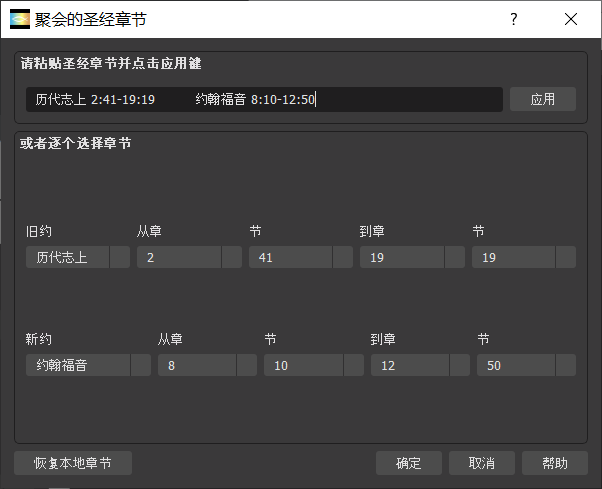
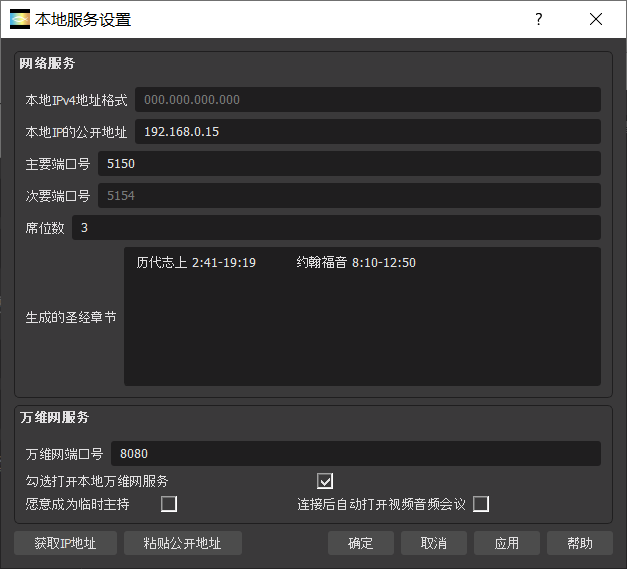

|
|---|
帮助门户
1、关于来米工坊（LMS）
马太福音18:20 “因为无论在哪里，有两三个人奉我的名聚会，那里就有我在他们中间。”
本项目是为基督信众，进行网上读经与团契，而开发的互联网边缘通讯软件。本项目核心思想是去中心化类似Zoom的会议软件，由超轻量主持端电脑与少数多线程客户端组成。
读经：英语（新国际版）与中文（和合本）圣经预装在此软件。将来有望支持其他语言版本。
团契：基于网络速度，支持至多8方，两三方可望稳定通讯。通讯目前仅限于音频与视频，下个版本将支持文字聊天。将来有望支持稳定多方通讯。
最新软件版本为英语版（1.0.0）以及中文版（1.0.1）。
2、何处下载与如何安装LMS
LMS目前仅支持Windows 10 64位电脑。将来计划支持安卓手机。
许可政策是 GNU 宽通用公共许可证.
在门户lightmeeting.github.io下载LMS.
可执行文件的默认安装文件路径为 “C:\Program Files\LM Fellowship\LMS Studio\Release\bin\64bit\lm64.exe”，
其中，“Release”指代版本号，如1.0.0作为第一版。
请允许软件通过Windows防火墙。
1）在文件菜单下启动开始聚会命令，或者可以从控制台中心启动。
2）选择正确的圣经书目章节，然后点击确定键。

3）登录对话框有两种登录模式：主持人或者参会人
选择正确的登录模式，键入您中意的用户名，点击应用键。

4）主持人模式
请拷贝圣经章节（历代志上2:41-19:19 约翰福音8:10-12:50）与口令，分别发送给其他参会人员。
5）参会人模式
请键入收到的口令。
可以在文件菜单下找到设置。
目前全面支持仅限于英语与中文，部分支持数十种其他语言。
1）本地服务设置是为主持会议使用
在文件菜单下找到本地服务设置。如果您只是参会人员，这是个可选项，您可以忽略。您可以跳过整个第6章。
输入本地IPv4的公开地址，根据格式XXX.XXX.XXX.XXX（例如185.199.111.153）。下文将告诉如何找到您的本地IPv4的公开地址。
输入主要端口号，从1到6553（例如5150）。
次要端口号将从主要端口号自动生成，公式为10 * 主要端口号 + 1。
这两个端口是下文稍后您将允许的端口转发。

2）如何找到本地IPv4的公开地址
A）点击“获取IP地址”键；
B）或者使用您的浏览器，点击本地网址
或者网站，例如
https://whatismyipaddress.com/
3）如何允许调制解调器做端口转发
使用您的浏览器，登录到调制解调器（或者叫猫）的主页，网址类似如下
登录后，如下图进行端口转发，将默认主要端口号5150以及次要端口号51501的UDP流量转发到您的电脑（192.168.0.15）。或者也可以使用上文您中意的其他端口号。
1）控制台
A）控制台是默认操作台。在其左上方有“主讲-预览”窗口，在其右上方有“我-视图”窗口。
会议前，“主讲-预览”窗口是设置您自己的视频，您可以手动拖拉视频的矩形边框调整到合适位置。调整视频后，可以点击“确定我的视频”键，让视频从“主讲-预览”窗口，传输到“我-视图”窗口。
会议中，“主讲-预览”窗口是设置主讲的视频，您可以手动拖拉视频的矩形边框调整到合适位置。调整视频后，可以发现会议厅相应的视频也调整好了。
当主讲在发言时，若是想看他提到的圣经章节，您可以在“主讲-预览”窗口下，阅读您的圣经。另外，可以右键点击矩形进行全屏播放，若是您想更好地欣赏他的讲话或是阅读他分享的远程屏幕。
B）音频：音频输入的3个选项
停止音频：没有音频输入。
麦克风：音频输入来自于电脑默认的麦克风。
扬声器：音频输入来自于电脑默认的扬声器。
C）视频：视频输入的5个选项
停止视频：没有视频输入。
摄像头：视频输入来自于您选中的摄像头。
显示屏：视频输入来自于您选中的电脑显示屏。
图片：静态视频输入来自于您选中的电脑图片。
视窗：视频输入来自于您选中的活动窗口。
2）会议厅
会议厅可供会议中使用。在会议厅里，可以看到主讲以外的其他参会人员。
在会议厅，主持人还负责协调会众发言。主持人点击某参会人窗口，允许该参会人对其他会众发言。
3）读经阁
读经阁是供您在大屏幕阅读圣经，无论是否开会。相比常用的读经软件，本读经阁的主要优势是一书一屏，让阅读圣经有整体感，方便关键词查询。
1）网络速度
节省带宽是有效通讯的关键。当主持人在讲话时，参会人最好关闭他们各自的视频。
默认音频速度是160 bit/s，默认视频速度是400 bit/s，总之为每个参会人员，LMS需要至少 70K Byte/s。至多8方需要单向560K Byte/s，以及双向1M Byte/s。
2）通讯次序
当前软件鼓励开会时，一个时间只有一位在主讲。
一般情况下，只有主持人对其他参与会众发言。
在会议厅，主持人还负责协调会众发言。主持人点击某参会人窗口，允许该参会人对其他会众发言。
3) 如何修整我的视频
如果LMS在首次运行时没有发现您的摄像头，而您确认有摄像头。请重启电脑，启动LMS，您现在将发现有摄像头。
如果“我的视频”过小，可以手动拖拉视频的矩形边框调整到合适位置。
4）如何修整主讲的视频
会议中，可以手动拖拉视频的矩形边框调整到合适“主讲-预览”窗口。调整视频后，可以发现会议厅相应的视频也调整好了。
另外，可以右键点击矩形进行全屏播放，若是您想更好地欣赏他的讲话或是阅读他分享的远程屏幕。
5）如何修整回声
您可以选择“停止音频”而关闭回声。
9、现存的问题
1）音频-视频延时
一般情况下，可能有两三秒延时。基于网络速度，可能有多达10秒钟的延时。
2）三方通讯不可靠
在某些网络状况下，三方通讯时，参会人员有可能听不清楚主持人讲话。
3）参会人发言通讯不可靠
在三方通讯时，当主持人允许某参会人发言时，其他参会人员可能听不清楚其发言。